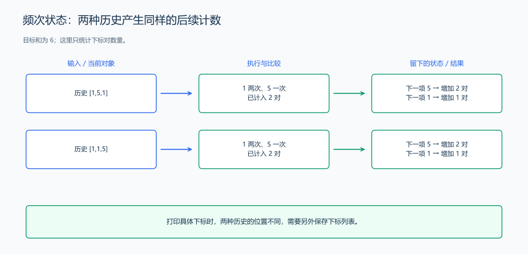

（十一） 从输出目标确定状态信息
看到输入后，不必把全部历史都搬进状态。先看未来的判断和最终输出会读到哪些信息。
以 [3,3,3]、目标和 6 为例，同一组数据可以提出四种问题：
| 输出要求 | 结果 | 计算时需要保留的信息 |
|---|---|---|
| 是否存在下标对 | YES | 过去是否出现过需要的值 |
| 下标对数量 | 3 | 过去每个值出现多少次，以及已累计的答案 |
| 不同取值组合数量 | 1 | 哪些取值组合已经计入 |
| 输出全部下标对 | (0,1)、(0,2)、(1,2) |
每个值对应的具体下标 |
把频次换成一个 bool，就能判断存在性，却会丢失计数信息；只保留频次，也无法还原具体下标。同样，求最短距离与输出实际路线，对状态的要求不同，后面的 BFS 会在距离之外保存父节点。
1. 依据后续行为合并历史
目标和为 6 时，已经读过 [1,5,1] 或 [1,1,5]，都会得到“1 出现两次、5 出现一次，已找到两对”。下一个数若为 5，两个历史都增加两对；若为 1，都增加一对。后续计数只会查询值的频次，历史内部的排列不再影响更新。

如果目标改为打印下标对，这两种历史的下标列表不同，就要继续保存具体位置。状态能否合并，取决于题目要保留哪些结果。
2. 根据未来的选择检查遗漏信息
在后面的服务窗口例题中，只知道“有两个窗口”无法决定把顾客交给谁，还需要知道它们是否空闲、何时结束，以及窗口编号。两份安排即使当前时间相同，窗口的结束时间不同，下一位顾客的开始时间也可能不同。
检查状态时可以做一个实际比较：找两段会被你记成同一个状态的历史，接上同一份后续输入。如果它们需要采取不同动作，或者最终答案不同，就还有信息被遗漏。若后续只读取同一份统计量，就可以围绕这份统计量实现程序。
这也是搜索逐渐走向记忆化和 DP 的起点：先确认一个子问题需要哪些信息，再让具有同样信息的计算共享结果。具体的缓存和状态转移会在搜索与 DP 中展开。